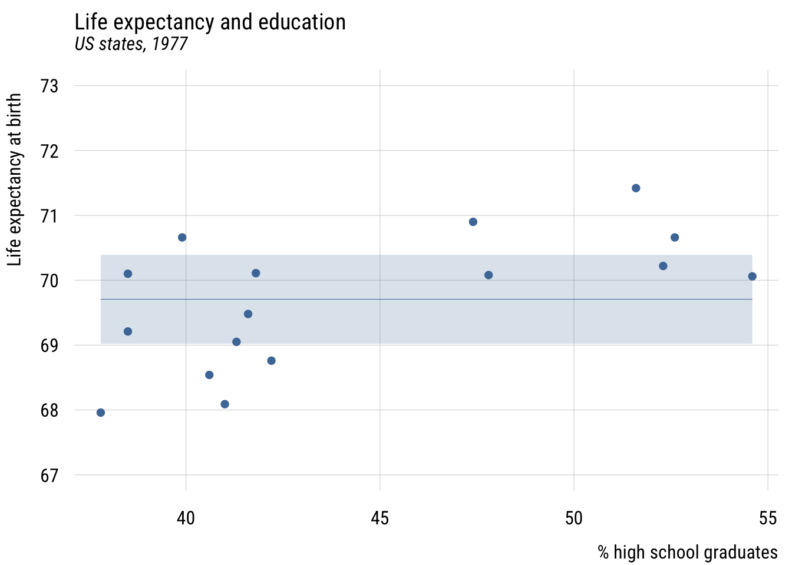
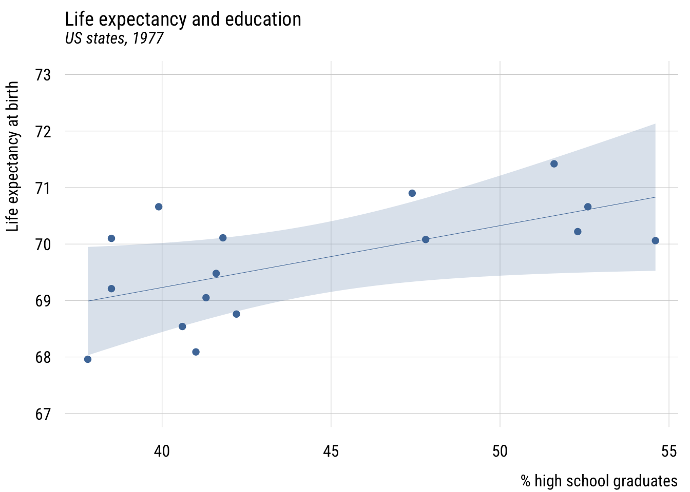
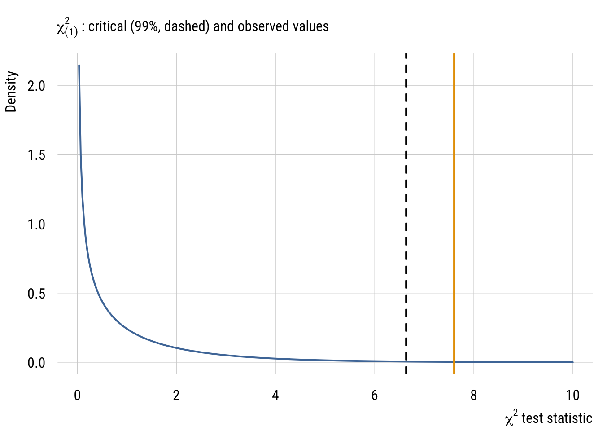

library(dplyr)
library(tidyr)
library(broom)
library(stringr)
library(modelsummary)
library(tinyplot)
tinytheme("ipsum",
family = "Roboto Condensed",
palette.qualitative = "Tableau 10",
palette.sequential = "agSunset")Likelihood and model selection*
Goals
The goal of this aside is to introduce you to some concepts that the book doesn’t really address until the very end: mainly likelihood-based model selection and the generalized linear model. Since likelihood came up in at the end of the Section A Recap and we’re now dealing with more realistic models (Chapter 6), this seemed like a good time.
Set up
As usual, we’ll set packages and our theme.
Get the same data we’ve been using.
state.x77_with_names <- as_tibble(state.x77,
rownames = "state")
states <- bind_cols(state.x77_with_names,
region = state.division) |> # both are in base R
janitor::clean_names() |> # lower case and underscore
mutate(south = as.integer( # make a south dummy
str_detect(as.character(region),
"South")))Evaluating likelihoods
50 cases isn’t very many but it will be even easier to understand what we’re doing with an even smaller sample. So let’s restrict the sample to the southern US states.
s_states <- states |>
filter(south == 1)Null model likelihood
Here’s the prediction of the “null model”:

We can write this null model like this, which is a little different than we see in the book. But it will generalize well to other types of models.
\[\begin{align} \text{lifeexp}_i &\sim \mathcal{N}(\mu_i, \sigma) \\ \mu_i &= \beta_0 \end{align}\]
This representation allows for a direct representation of the likelihood, which we saw in the Section A Recap.
We can calculate get that number either the easy way:
mc <- lm(life_exp ~ 1, data = s_states)
logLik(mc)'log Lik.' -22.53801 (df=2)Or we can get it the hard way:
m_hat <- mc$coefficients[1]
s_hat <- sd(mc$residuals)
s_states <- s_states |>
mutate(l_mc = dnorm(life_exp, m_hat, s_hat), # rowwise likelihood
ll_mc = log(l_mc)) # rowwise log-likelihoodHere are the likelihoods:
[1] 0.31759577 0.25254287 0.36759389 0.25254287 0.20356969 0.36237192
[7] 0.25427082 0.34397205 0.11181475 0.34689364 0.09572509 0.09071031
[13] 0.36099167 0.19734482 0.36504343 0.38083463Here are the log-likelihoods (which we use):
[1] -1.1469759 -1.3761743 -1.0007765 -1.3761743 -1.5917469 -1.0150842
[7] -1.3693554 -1.0671949 -2.1909118 -1.0587371 -2.3462748 -2.4000842
[13] -1.0189004 -1.6228027 -1.0077389 -0.9653901And here’s the sum, which is the model log-likelihood. OK enough review of that…
sum(s_states$ll_mc)[1] -22.55432“Augmented” model likelihood
Let’s keep going. As before, we will add the predictor here so that we make different predictions for different cases.
Show code
plt(life_exp ~ hs_grad,
data = s_states,
ylim = c(67, 73),
main = "Life expectancy and education",
sub = "US states, 1977",
xlab = "% high school graduates",
ylab = "Life expectancy at birth")
plt_add(type = "lm",
level = .99)
We can write this model like this:
\[\begin{align} \text{lifeexp}_i &\sim \mathcal{N}(\mu_i, \sigma) \\ \mu_i &= \beta_0 + \beta_1\,\text{hsgpct}_i \end{align}\]
And estimate it like this:
ma <- lm(life_exp ~ hs_grad, data = s_states)
logLik(ma)'log Lik.' -18.73661 (df=3)You can probably see that the log-likelihood of Model A (-18.74) is higher/better than the log-likelihood of Model C (-22.54). But how can we interpret this comparison?
ll_diff <- as.numeric(logLik(ma)) - as.numeric(logLik(mc))
ll_diff # the difference[1] 3.8014exp(ll_diff) # the exponentiated difference[1] 44.76381Exponentiating the log-likelihood difference tells us that Model A is 45 times more likely than Model C given the data. That seems like a lot! But remember that any more complicated model is going to be at least somewhat more likely. So what is a more systematic way to compare them?
Comparing model likelihoods
We are going to consider three ways to compare likelihoods: the likelihood ratio test, the AIC, and the BIC.
Likelihood ratio test
It turns out that two times the log-likelihood difference can be used as a test statistic (often called \(G^2\)) for testing the null hypothesis that any parameters you added could be set to zero.
This is almost exactly like the \(F\) test that you know already. The only difference is looking up an \(F\) statistic on an \(F\) table, you look up the \(G^2\) statistic on the \(\chi^2\) (“chi-square”) table with \(df\) equal to the number of parameters that differ between the models (just like numerator \(df\) in the \(F\) distribution)1.
1 We might point out that \(t\) is to \(F\) as \(z\) is to \(\chi^2\). We could also say that \(t\) is to \(z\) as \(F\) is to \(\chi^2\). Both \(t\) and \(F\) are “small sample” statistics whereas \(z\) and \(\chi^2\) are “large sample” or “asymptotic” statistics.
\[ G^2 = 2 \bigl[ \ell(\hat{\theta_1}) - \ell(\hat{\theta_0}) \bigr] \overset{\text{approx}}{\sim} \chi^2_{df} \]
x <- seq(0, 10, length.out = 300)
y <- dchisq(x, df = 1)
# main curve
plt(y ~ x,
type = "l",
sub = expression(chi[(1)]^2 ~ ": critical (99%, dashed) and observed values"),
xlab = expression(chi^2 ~ "test statistic"),
ylab = "Density",
xlim = c(0, 10),
lwd = 2)
# critical and observed lines
abline(v = qchisq(.99, 1), lty = 2, lwd = 2) # dashed
abline(v = 2*ll_diff, col = "#E69F00", lwd = 2)
The resulting p-value here is 0.00583, which is not too different (but a bit smaller) from what we’d get from the same \(F\) test (0.01123). This is because the \(\chi^2\) is like an \(F\) distribution with infinite denominator degrees of freedom.